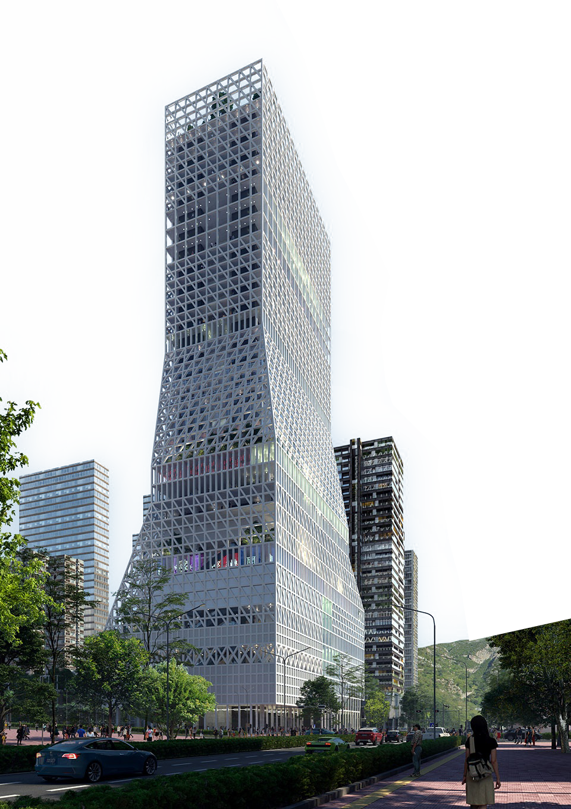
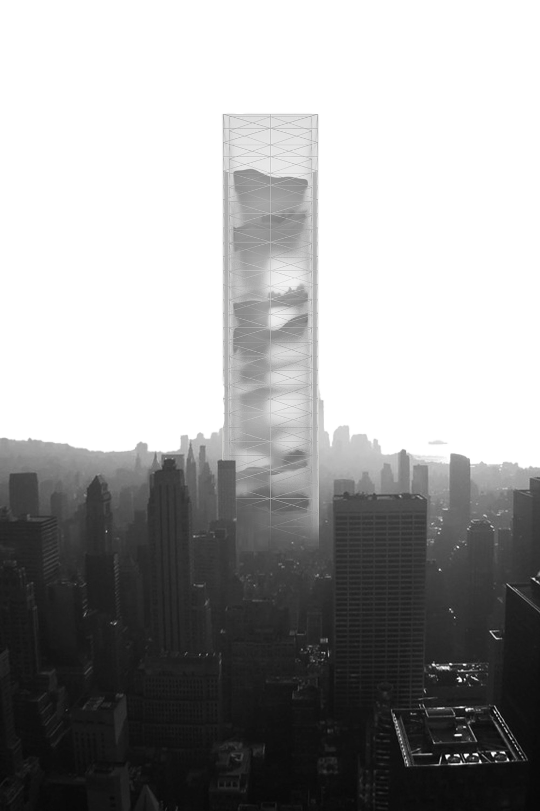
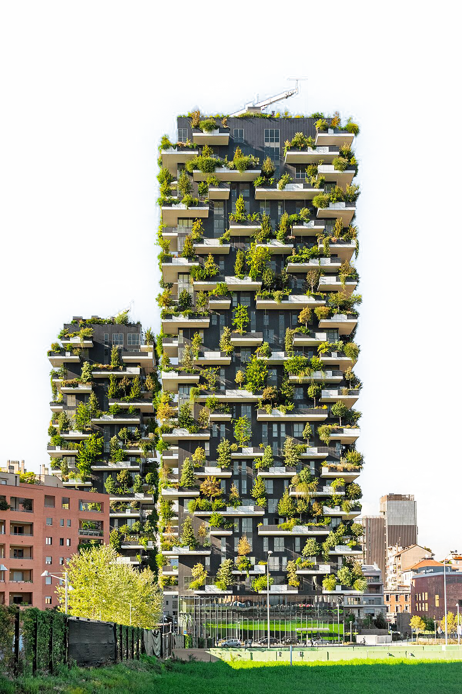
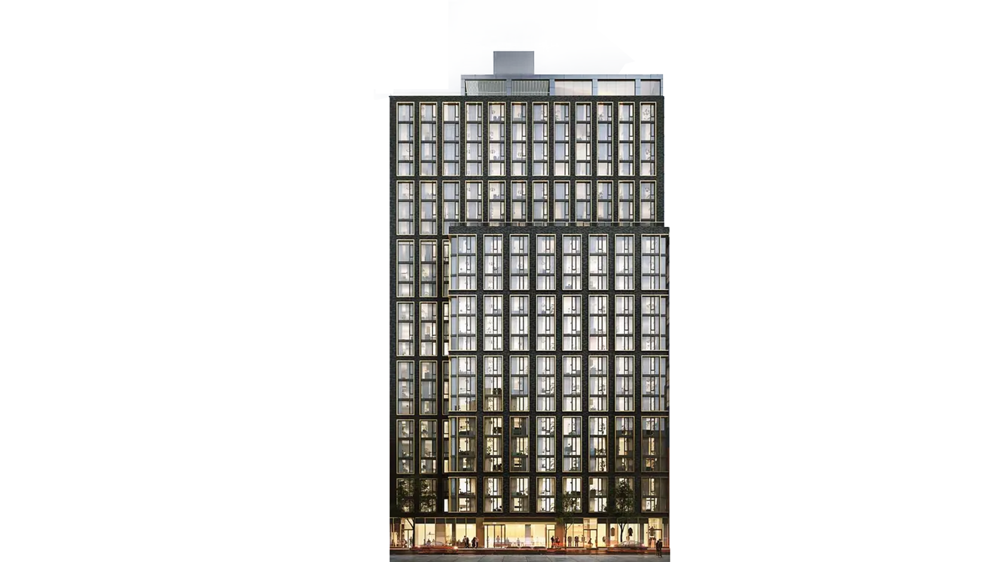
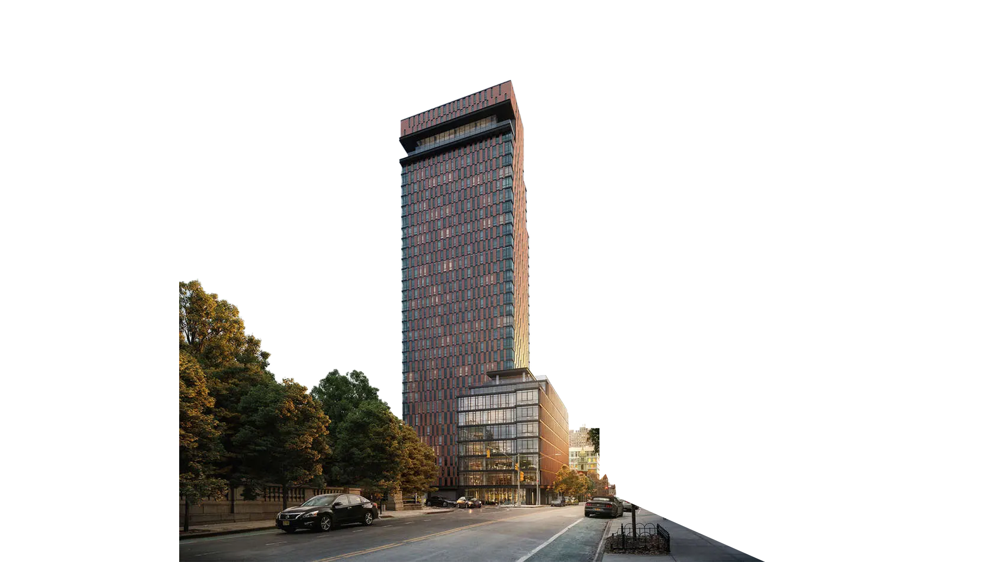
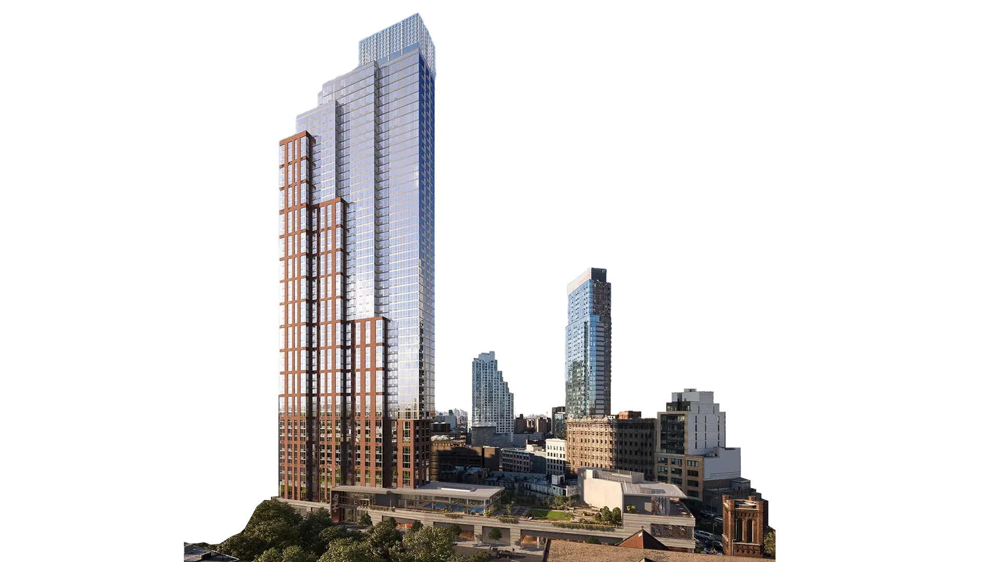
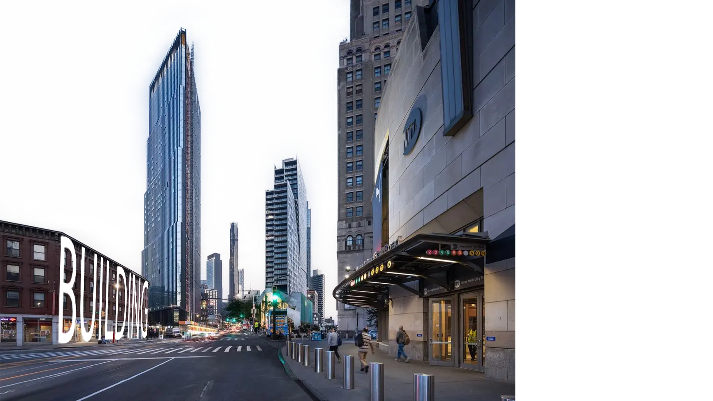

Slopspace is what remains after image culture has replaced architecture and what emerges when architecture persists only as image. Slopspace extends the notion of Junkspace into the post-digital, where spaces are no longer designed to be inhabited, but to be rendered, circulated, and capitalized. Where Junkspace was the fallout of modernization and globalization, Slopspace is the feedback loop of image economies. The Fieldguide on After Capital and the project explore how architectural images, once tools of representation, have become instruments of speculation, commodified through clicks, scrolls, ratings and engagement metrics. These images thrive on visibility, attention and desire, but erode meaning. They are saturated yet empty, hyper-designed yet affectless, rich in data yet poor in information. Slopspace is not confined to screens, it infiltrates cities, interiors, domestic life, leisure, labor, and natural environments. It is built from magic hour skies, social media trends, viral hotpots, branded interiors, AI hallucinations, Insta-repeats, failed competition proposals, saturated urban landscapes, advertisement billboards, artificial natures, trees on skyscrapers and real estate renders optimized for desire extraction. Public space dissolves into feeds, architecture is not lived, but shared and streamed. Slopspace is an after image of capital, a spatial condition shaped by the exhaustion of attention and the automation of desire. As both symptom and possibility, Slopspace marks a threshold: not just of how architecture is visualized, but of how it is lived, extracted, and ultimately undone. As images accumulate and accelerate, the very notion of space begins to collapse, either into implosion through overproduction, or into a cultural numbness where nothing registers.






